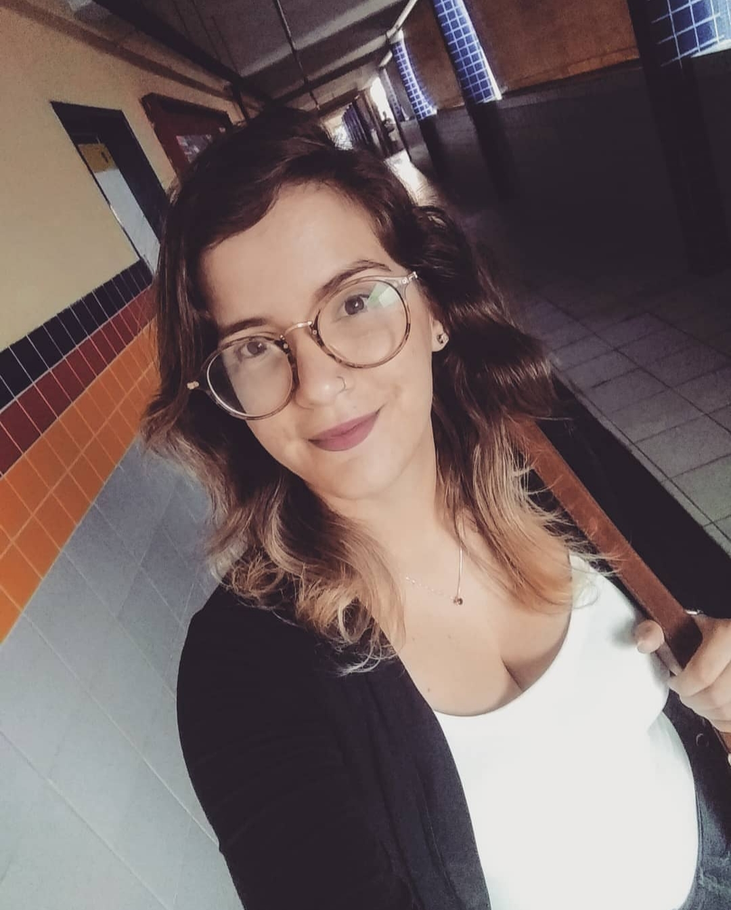

Alunos do IFRN, curso técnico integrado em Informática.
A ideia surgiu em uma aula de história, com a professora Rhayara, que relatou CM como exemplo, por termos uma riqueza imensa de cultura/riquezas mas não há uma valorização da sociedade em geral. Diante disso, resolvemos criar o site de turismo, para que haja uma maior visibilidade da nossa terra, fazendo com que não só as pessoas de fora a admirem, e sim sua comunidade como um todo.
" A partir do entendimento do município de Ceará-Mirim enquanto um grande berço da História Colonial do nosso estado e do nosso país, o presente projeto reivindica a posição de comunicador de utilidade pública para a população, bem como a de veículo de valorização do patrimônio histórico da região, que, ao meu ver, se coloca como uma pauta urgente e de máxima demanda da nossa atenção enquanto sociedade culturalmente engajada. Eu, enquanto professora da disciplina de História e pesquisadora da área de Memória, me sinto imensamente orgulhosa pela livre iniciativa das alunas em compor um site tratando do valor cultural e patrimonial da cidade em que atualmente leciono e mais grata ainda pelo fato dessa ideia ter surgido durante discussões realizadas em uma de minhas aulas, por acreditar que a educação é a maior ferramenta de transformação da mentalidade de uma sociedade. "

-- Rhayra Lira.